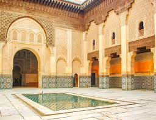

Mon voyage parfait
DESCRIPTION
Marrakech, située au pied des montagnes de l’Atlas, est une ville vibrante reconnue pour ses couleurs chaudes, son architecture mauresque et son atmosphère envoûtante. Cœur historique du Maroc, elle séduit par ses souks animés, la médina classée à l’UNESCO, ses jardins luxuriants et la célèbre place Jemaa el-Fna, où traditions et modernité se rencontrent. Climat ensoleillé, artisanat raffiné et cuisine parfumée en font une destination incontournable pour une immersion culturelle unique.
Savais-tu que?
Marrakech possède une géographie variée, avec des montagnes de l'Atlas à proximité (comme le Toubkal), l'océan Atlantique à environ 150 km et des zones désertiques accessibles, le tout sur un relief plat. La ville est divisée entre sa médina historique et les quartiers modernes, et elle est célèbre pour sa palmeraie luxuriante et le fleuve Tensift qui traverse ses environs.
SITES À VOIR
Médina de Marrakech
Le jardin Majorelle
Le palais El Badi
Medersa Ben Youssef
METS POPULAIRES
| Tajine | |
| Couscous |  |
| Pastilla | |
| Harira |